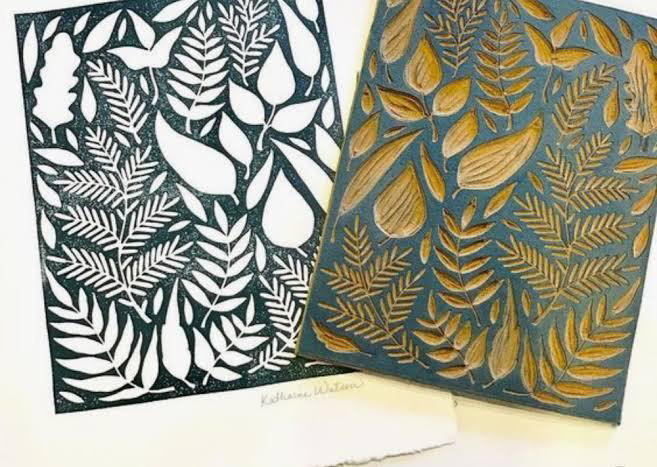

Figure 4.4: Intaglio block motif with its result stamped on the surface
Source: https://chaseterraceacademy.co.uk/wp-content/uploads/2021/03/GCSE_Art+2021.pdf.
Retrieved on 08th October 2022
Materials used in the intaglio printing process
Intaglio printing requires specific materials, tools, and equipment to create the engraved plates and produce the final prints. The key items used in the intaglio printing process are:
Metal plates: Copper, zinc, or steel plates are commonly used as the base material for intaglio printing. Copper is the most traditional choice due to its malleability and excellent ink retention properties.
Printing ink: Specialised intaglio printing inks are used. These inks are typically oil-based and have a higher viscosity to ensure they stick well to the engraved lines and grooves on the plate.
Printing paper: High-quality, dampened paper is used for the printing process. The paper should be able to withstand the pressure applied during printing and effectively absorb the ink from the plate.
Tools and equipment used in intaglio printing process
The following are tools and equipment used in intaglio printing press: